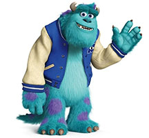

Contact
James P. "Sully" Sullivan
Monstropolis, MU Campus District
(555) ROAR-INC
sully@monstersinc.com

LinkedIn: linkedin.com/in/jpsullivan
Species: Large Furry Monster (Scarer Class)
Skills
- Expert in Scaring Techniques (Certified Top Scarer)
- Leadership and Team Motivation
- High-Stakes Crisis Management
- Child Safety Protocols
- Door Portal Navigation
- Conflict Resolution
- Strong Physical Endurance and Agility
- Emotional Intelligence and Empathy
- Familiar with Scream/Laugh Energy Systems
Education
Monsters University (MU)
Bachelor of Scaring Sciences
Graduated: Top of Class (Barely – thanks to Mike Wazowski)
- Member, Oozma Kappa Fraternity
- 1st Place, Scare Games Champion
- Specialized in Child Psychology and Fear Analysis
Experience
CEO and Co-Founder – Monsters, Inc. Laugh Floor
Monsters, Inc., Monstropolis ©
2023 – Present
- Rebuilt company operations to run on laughter energy, leading to 300% efficiency increase
- Oversaw transition from fear-based energy to sustainable humor-based model
- Managed cross-departmental team of monsters with diverse skillsets
- Implemented child-friendly safety protocols across all operations
Top Scarer – Monsters, Inc.
Monsters, Inc., Monstropolis ©
1999 – 2023
- Held #1 spot on Scare Floor Leaderboard for multiple years
- Set all-time scaring record before industry transition
- Partnered with Mike Wazowski to achieve record-breaking energy production
- Rescued and protected human child "Boo", proving monsters and children can safely coexist